import matplotlib.pyplot as plt
import numpy as np
import tensorflow as tf
from sklearn.metrics import accuracy_score, precision_score, recall_score
from sklearn.model_selection import train_test_split
from tensorflow.keras import layers, losses
from tensorflow.keras.models import Model
Exercise: Anomaly Detection¶
This exercise is based on the tensorflow tutorial about autoencoders. In this exercise, we will detect anomalies on the ECG5000 dataset using an RNN, an autoencoder and a variational autoencoder. This dataset contains 5,000 Electrocardiograms, each with 140 data points. We will use a simplified version of the dataset, where each example has been labeled either 0 (corresponding to an abnormal rhythm), or 1 (corresponding to a normal rhythm). We are interested in identifying the abnormal rhythms. For more information on anomaly detection, check out this interactive example.
Load and prepare ECG data¶
The dataset we will use is based on one from timeseriesclassification.com.
# Load the dataset
raw_data = np.genfromtxt('data.csv')
raw_data[0,:]
array([-0.11252183, -2.8272038 , -3.7738969 , -4.3497511 , -4.376041 ,
-3.4749863 , -2.1814082 , -1.8182865 , -1.2505219 , -0.47749208,
-0.36380791, -0.49195659, -0.42185509, -0.30920086, -0.4959387 ,
-0.34211867, -0.35533627, -0.36791303, -0.31650279, -0.41237405,
-0.47167181, -0.41345783, -0.36461703, -0.44929829, -0.47141866,
-0.42477658, -0.46251673, -0.55247236, -0.47537519, -0.6942 ,
-0.7018681 , -0.59381178, -0.66068415, -0.71383066, -0.76980688,
-0.67228161, -0.65367605, -0.63940562, -0.55930228, -0.59167032,
-0.49322332, -0.46305183, -0.30164382, -0.23273401, -0.12505488,
-0.15394314, -0.0243574 , -0.06560876, 0.03499926, 0.06193522,
0.07119542, 0.12392505, 0.10312371, 0.22522849, 0.12868305,
0.30248315, 0.25727621, 0.19635161, 0.17938297, 0.24472863,
0.34121687, 0.32820441, 0.40604169, 0.44660507, 0.42406823,
0.48151204, 0.4778438 , 0.62408259, 0.57458456, 0.59801319,
0.5645919 , 0.607979 , 0.62063457, 0.65625291, 0.68474806,
0.69427284, 0.66558377, 0.57579577, 0.63813479, 0.61491695,
0.56908343, 0.46857572, 0.44281777, 0.46827436, 0.43249295,
0.40795792, 0.41862256, 0.36253075, 0.41095901, 0.47166633,
0.37216676, 0.33787543, 0.22140511, 0.27399747, 0.29866408,
0.26356357, 0.34256352, 0.41950529, 0.58660736, 0.86062387,
1.1733446 , 1.2581791 , 1.4337887 , 1.7005334 , 1.9990431 ,
2.1253411 , 1.9932907 , 1.9322463 , 1.7974367 , 1.5222839 ,
1.2511679 , 0.99873034, 0.48372242, 0.02313229, -0.19491383,
-0.22091729, -0.24373668, -0.25469462, -0.29113555, -0.25649034,
-0.22787425, -0.32242276, -0.28928586, -0.31816951, -0.36365359,
-0.39345584, -0.26641886, -0.25682316, -0.28869399, -0.16233755,
0.16034772, 0.79216787, 0.93354122, 0.79695779, 0.57862066,
0.2577399 , 0.22807718, 0.12343082, 0.92528624, 0.19313742,
1. ])
# The last element contains the labels
labels = raw_data[:, -1]
# The other data points are the electrocadriogram data
data = raw_data[:, 0:-1]
train_data, test_data, train_labels, test_labels = train_test_split(
data, labels, test_size=0.2, random_state=21
)
Normalize the data to [0,1].
min_val = tf.reduce_min(train_data)
max_val = tf.reduce_max(train_data)
train_data = (train_data - min_val) / (max_val - min_val)
test_data = (test_data - min_val) / (max_val - min_val)
train_data = tf.cast(train_data, tf.float32)
test_data = tf.cast(test_data, tf.float32)
We separate the normal rhythms from the abnormal rhythms.
train_labels = train_labels.astype(bool)
test_labels = test_labels.astype(bool)
normal_train_data = train_data[train_labels]
normal_test_data = test_data[test_labels]
anomalous_train_data = train_data[~train_labels]
anomalous_test_data = test_data[~test_labels]
Plot a normal ECG.
plt.grid()
plt.plot(np.arange(140), normal_train_data[0])
plt.title("A Normal ECG")
plt.show()
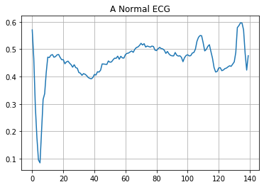
Plot an anomalous ECG.
plt.grid()
plt.plot(np.arange(140), anomalous_train_data[0])
plt.title("An Anomalous ECG")
plt.show()
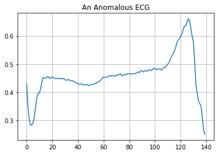
RNN for anomaly detection¶
Since we have access to the labels of the dataset, we can frame the anomaly detection as a supervised learning problem. Similar to the detection of exoplanets, where a time series of light intensities was labeled as having either an exoplanet as cause or not, we want to predict the label of the time series of ecg data.
# Reshape the dataset as we saw in the exoplanet problem
train_data = np.expand_dims(train_data,2)
"""CREATING THE LSTM MODEL"""
# Create the model
model = tf.keras.Sequential()
model.add(layers.LSTM(100, input_shape=(train_data.shape[1],train_data.shape[2])))
model.add(layers.Dropout(0.25))
model.add(layers.Dense(1, activation='sigmoid'))
model.summary()
Model: "sequential"
_________________________________________________________________
Layer (type) Output Shape Param #
=================================================================
lstm (LSTM) (None, 100) 40800
_________________________________________________________________
dropout (Dropout) (None, 100) 0
_________________________________________________________________
dense (Dense) (None, 1) 101
=================================================================
Total params: 40,901
Trainable params: 40,901
Non-trainable params: 0
_________________________________________________________________
# Compile the model
model.compile(loss = 'binary_crossentropy', optimizer='adam')
# Fit the model
history = model.fit(train_data, train_labels, epochs = 20, batch_size = 256)
Epoch 1/20
16/16 [==============================] - 3s 219ms/step - loss: 0.6538
Epoch 2/20
16/16 [==============================] - 3s 209ms/step - loss: 0.5434
Epoch 3/20
16/16 [==============================] - 3s 218ms/step - loss: 0.5166
Epoch 4/20
16/16 [==============================] - 4s 227ms/step - loss: 0.5212
Epoch 5/20
16/16 [==============================] - 4s 221ms/step - loss: 0.4497
Epoch 6/20
16/16 [==============================] - 3s 203ms/step - loss: 0.2577
Epoch 7/20
16/16 [==============================] - 4s 229ms/step - loss: 0.1959
Epoch 8/20
16/16 [==============================] - 3s 213ms/step - loss: 0.1835
Epoch 9/20
16/16 [==============================] - 4s 223ms/step - loss: 0.1437
Epoch 10/20
16/16 [==============================] - 4s 220ms/step - loss: 0.1226
Epoch 11/20
16/16 [==============================] - 3s 212ms/step - loss: 0.1292
Epoch 12/20
16/16 [==============================] - 3s 209ms/step - loss: 0.1150
Epoch 13/20
16/16 [==============================] - 3s 200ms/step - loss: 0.1058
Epoch 14/20
16/16 [==============================] - 3s 200ms/step - loss: 0.1096
Epoch 15/20
16/16 [==============================] - 3s 208ms/step - loss: 0.0956
Epoch 16/20
16/16 [==============================] - 4s 222ms/step - loss: 0.1145
Epoch 17/20
16/16 [==============================] - 4s 221ms/step - loss: 0.0931
Epoch 18/20
16/16 [==============================] - 3s 212ms/step - loss: 0.0782
Epoch 19/20
16/16 [==============================] - 3s 211ms/step - loss: 0.0708
Epoch 20/20
16/16 [==============================] - 4s 223ms/step - loss: 0.0839
plt.plot(history.history["loss"], label="Training Loss")
plt.legend()
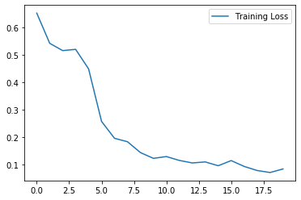
# Predict the labels of the testset
preds = model.predict(np.expand_dims(test_data,2))
preds = np.array((np.array(np.round(preds,0).flatten(),dtype=int) > 0).tolist())
# Compute the metrics
accuracy_test_rnn= accuracy_score(test_labels, preds)
print('Accuracy = ',accuracy_test_rnn)
precision_test_rnn=precision_score(test_labels, preds)
print('Precision = ',precision_test_rnn)
recall_test_rnn=recall_score(test_labels, preds)
print('Recall = ',recall_test_rnn)
Accuracy = 0.976
Precision = 0.9785714285714285
Recall = 0.9785714285714285
Autoencoder for anomaly detection¶
Usually we do not have access to well labeled datasets, but have to frame the problem as an unsupervised learning process. But how can we use an autoencoder in this setting? The objective of an autoencoder is to minimize the reconstruction error of a given input. We will therefore train an autoencoder solely on the normal ecg sequences, such that it reconstructs these examples with minimal error. The idea now is the following: Abnormal rhythms should have a higher reconstruction error as the normal sequences, allowing us to classify a rhythm as an anomaly if the reconstruction error is higher than a fixed threshold.
Build the model¶
class AnomalyDetector(Model):
def __init__(self):
super(AnomalyDetector, self).__init__()
# Define the encoder network
self.encoder = tf.keras.Sequential([
layers.Dense(32, activation="relu"),
layers.Dense(16, activation="relu"),
layers.Dense(8, activation="relu")])
# Define the decoder network
self.decoder = tf.keras.Sequential([
layers.Dense(16, activation="relu"),
layers.Dense(32, activation="relu"),
layers.Dense(140, activation="sigmoid")])
def call(self, x):
# Define how an evaluation of the network is performed
encoded = self.encoder(x)
decoded = self.decoder(encoded)
return decoded
autoencoder = AnomalyDetector()
# Compile the model
autoencoder.compile(optimizer='adam', loss='mae')
Notice that the autoencoder is trained using only the normal ECGs.
history = autoencoder.fit(normal_train_data, normal_train_data,
epochs=20,
batch_size=256,
validation_data=(normal_test_data, normal_test_data),
shuffle=True)
Epoch 1/20
10/10 [==============================] - 0s 11ms/step - loss: 0.0580 - val_loss: 0.0559
Epoch 2/20
10/10 [==============================] - 0s 2ms/step - loss: 0.0544 - val_loss: 0.0517
Epoch 3/20
10/10 [==============================] - 0s 3ms/step - loss: 0.0494 - val_loss: 0.0454
Epoch 4/20
10/10 [==============================] - 0s 2ms/step - loss: 0.0424 - val_loss: 0.0381
Epoch 5/20
10/10 [==============================] - 0s 3ms/step - loss: 0.0355 - val_loss: 0.0321
Epoch 6/20
10/10 [==============================] - 0s 3ms/step - loss: 0.0303 - val_loss: 0.0280
Epoch 7/20
10/10 [==============================] - 0s 2ms/step - loss: 0.0268 - val_loss: 0.0250
Epoch 8/20
10/10 [==============================] - 0s 3ms/step - loss: 0.0245 - val_loss: 0.0235
Epoch 9/20
10/10 [==============================] - 0s 3ms/step - loss: 0.0233 - val_loss: 0.0226
Epoch 10/20
10/10 [==============================] - 0s 2ms/step - loss: 0.0225 - val_loss: 0.0218
Epoch 11/20
10/10 [==============================] - 0s 3ms/step - loss: 0.0218 - val_loss: 0.0212
Epoch 12/20
10/10 [==============================] - 0s 3ms/step - loss: 0.0213 - val_loss: 0.0209
Epoch 13/20
10/10 [==============================] - 0s 3ms/step - loss: 0.0210 - val_loss: 0.0206
Epoch 14/20
10/10 [==============================] - 0s 2ms/step - loss: 0.0208 - val_loss: 0.0204
Epoch 15/20
10/10 [==============================] - 0s 2ms/step - loss: 0.0206 - val_loss: 0.0202
Epoch 16/20
10/10 [==============================] - 0s 2ms/step - loss: 0.0205 - val_loss: 0.0201
Epoch 17/20
10/10 [==============================] - 0s 3ms/step - loss: 0.0204 - val_loss: 0.0200
Epoch 18/20
10/10 [==============================] - 0s 3ms/step - loss: 0.0203 - val_loss: 0.0199
Epoch 19/20
10/10 [==============================] - 0s 3ms/step - loss: 0.0201 - val_loss: 0.0198
Epoch 20/20
10/10 [==============================] - 0s 3ms/step - loss: 0.0200 - val_loss: 0.0197
plt.plot(history.history["loss"], label="Training Loss")
plt.plot(history.history["val_loss"], label="Validation Loss")
plt.legend()
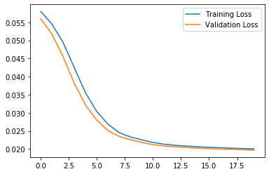
Let’s take a look at the signal after encoding and decoding by the autoencoder.
encoded_imgs = autoencoder.encoder(normal_test_data).numpy()
decoded_imgs = autoencoder.decoder(encoded_imgs).numpy()
plt.plot(normal_test_data[0],'b')
plt.plot(decoded_imgs[0],'r')
plt.fill_between(np.arange(140), decoded_imgs[0], normal_test_data[0], color='lightcoral' )
plt.legend(labels=["Input", "Reconstruction", "Error"])
plt.show()
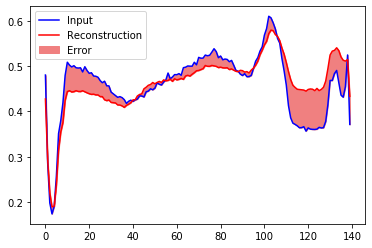
Creating a similar plot for an anomalous test example:
encoded_imgs = autoencoder.encoder(anomalous_test_data).numpy()
decoded_imgs = autoencoder.decoder(encoded_imgs).numpy()
plt.plot(anomalous_test_data[0],'b')
plt.plot(decoded_imgs[0],'r')
plt.fill_between(np.arange(140), decoded_imgs[0], anomalous_test_data[0], color='lightcoral' )
plt.legend(labels=["Input", "Reconstruction", "Error"])
plt.show()
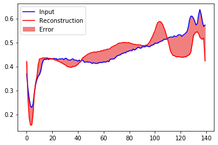
Detect anomalies¶
We will detect anomalies by calculating whether the reconstruction loss is greater than a fixed threshold. For this we use the mean average error for normal examples from the training set, then classify future examples as anomalous if the reconstruction error is higher than one standard deviation from the training set.
Ploting the reconstruction error on normal ECGs from the training set
reconstructions = autoencoder.predict(normal_train_data)
train_loss = tf.keras.losses.mae(reconstructions, normal_train_data)
plt.hist(train_loss, bins=50)
plt.xlabel("Train loss")
plt.ylabel("No of examples")
plt.show()
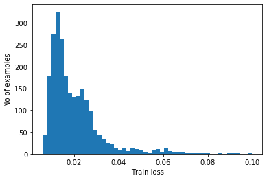
Choose a threshold value that is one standard deviation above the mean.
threshold_ae = np.mean(train_loss) + np.std(train_loss)
print("Threshold: ", threshold_ae)
Threshold: 0.031951994
Note: There are other strategies you could use to select a threshold value above which test examples should be classified as anomalous, the correct approach will depend on your dataset.
Most anomalous examples in the test set have a greater reconstruction error than the threshold. By changing the threshold, we can adjust precision and recall of the classifier.
reconstructions = autoencoder.predict(anomalous_test_data)
test_loss = tf.keras.losses.mae(reconstructions, anomalous_test_data)
plt.hist(test_loss, bins=50)
plt.axvline(threshold_ae,c='r')
plt.xlabel("Test loss")
plt.ylabel("No of examples")
plt.show()
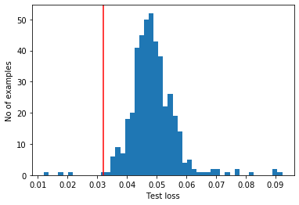
Classify an ECG as an anomaly if the reconstruction error is greater than the threshold.
def predict(model, data, threshold):
reconstructions = model(data)
loss = tf.keras.losses.mae(reconstructions, data)
return tf.math.less(loss, threshold)
def print_stats(predictions, labels):
print("Accuracy = {}".format(accuracy_score(labels, preds)))
print("Precision = {}".format(precision_score(labels, preds)))
print("Recall = {}".format(recall_score(labels, preds)))
preds = predict(autoencoder, test_data, threshold_ae)
print_stats(preds, test_labels)
Accuracy = 0.942
Precision = 0.9921568627450981
Recall = 0.9035714285714286
Variational Autoencoder for anomaly detection¶
Autoencoders have a strong tendency to overfit on the training data. In class you got to know variational autoencoders, which are designed to mitigate this problem. First, define a function performing the sampling in the laten space using the reparametrization trick (this allows backpropagation of the gradient).
class Sampling(layers.Layer):
"""Uses (z_mean, z_log_var) to sample z, the vector encoding a digit."""
def call(self, inputs):
z_mean, z_log_var = inputs
batch = tf.shape(z_mean)[0]
dim = tf.shape(z_mean)[1]
epsilon = tf.keras.backend.random_normal(shape=(batch, dim))
return z_mean + tf.exp(0.5 * z_log_var) * epsilon
Define the encoder part of the network, containing the sampling step.
def encoder_model(normal_train_data):
encoder_inputs = tf.keras.Input(shape=(normal_train_data.shape[1]))
x = layers.Dense(32, activation="relu")(encoder_inputs)
x = layers.Dense(16, activation="relu")(x)
x = layers.Dense(8, activation="relu")(x)
# So far we just copied the network from above
# Now we generate the latent space of mean and log-variance, in this case of dimension 8
z_mean = layers.Dense(8, name="z_mean")(x)
z_log_var = layers.Dense(8, name="z_log_var")(x)
# Sample from these distributions
z = Sampling()([z_mean, z_log_var])
encoder = tf.keras.Model(encoder_inputs, [z_mean, z_log_var, z], name="encoder")
return encoder
Define the decoding network.
def decoder_model(normal_train_data):
# Recreate the network we used for the 'normal' autoencoder
latent_inputs = tf.keras.Input(shape=(8,))
x = layers.Dense(16, activation="relu")(latent_inputs)
x = layers.Dense(32, activation="relu")(x)
decoder_outputs = layers.Dense(normal_train_data.shape[1], activation="relu")(x)
decoder = tf.keras.Model(latent_inputs, decoder_outputs, name="decoder")
return decoder
class VAE(tf.keras.Model):
def __init__(self, encoder, decoder, **kwargs):
super(VAE, self).__init__(**kwargs)
self.encoder = encoder
self.decoder = decoder
def train_step(self, data):
if isinstance(data, tuple):
data = data[0]
with tf.GradientTape() as tape:
z_mean, z_log_var, z = self.encoder(data)
reconstruction = self.decoder(z)
reconstruction_loss = tf.reduce_mean(
tf.keras.losses.binary_crossentropy(data, reconstruction)
)
kl_loss = 1 + z_log_var - tf.square(z_mean) - tf.exp(z_log_var)
kl_loss = tf.reduce_mean(kl_loss)
kl_loss *= -0.5
total_loss = reconstruction_loss + kl_loss
grads = tape.gradient(total_loss, self.trainable_weights)
self.optimizer.apply_gradients(zip(grads, self.trainable_weights))
return {
"loss": total_loss,
"reconstruction_loss": reconstruction_loss,
"kl_loss": kl_loss,
}
def call(self, x):
encoded = self.encoder(x)
decoded = self.decoder(encoded)
return decoded
# Get the encoder and decoder models
encoder = encoder_model(normal_train_data)
decoder = decoder_model(normal_train_data)
# Get the combined model
vae = VAE(encoder, decoder)
# Compile the model
vae.compile(optimizer=tf.keras.optimizers.Adam())
# Fit the model to the training set
history = vae.fit(normal_train_data, normal_train_data,
epochs=80,
batch_size=128,
shuffle=True)
Epoch 1/80
19/19 [==============================] - 0s 2ms/step - loss: 3.4000 - reconstruction_loss: 3.3788 - kl_loss: 0.0211
Epoch 2/80
19/19 [==============================] - 0s 2ms/step - loss: 2.4422 - reconstruction_loss: 2.4147 - kl_loss: 0.0276
Epoch 3/80
19/19 [==============================] - 0s 2ms/step - loss: 1.8251 - reconstruction_loss: 1.8168 - kl_loss: 0.0083
Epoch 4/80
19/19 [==============================] - 0s 2ms/step - loss: 1.4528 - reconstruction_loss: 1.4517 - kl_loss: 0.0011
Epoch 5/80
19/19 [==============================] - 0s 2ms/step - loss: 1.2076 - reconstruction_loss: 1.2075 - kl_loss: 7.9393e-05
Epoch 6/80
19/19 [==============================] - 0s 2ms/step - loss: 1.0510 - reconstruction_loss: 1.0509 - kl_loss: 1.9042e-04
Epoch 7/80
19/19 [==============================] - 0s 2ms/step - loss: 0.9681 - reconstruction_loss: 0.9668 - kl_loss: 0.0012
Epoch 8/80
19/19 [==============================] - 0s 2ms/step - loss: 0.9196 - reconstruction_loss: 0.9158 - kl_loss: 0.0038
Epoch 9/80
19/19 [==============================] - 0s 1ms/step - loss: 0.8778 - reconstruction_loss: 0.8753 - kl_loss: 0.0025
Epoch 10/80
19/19 [==============================] - 0s 2ms/step - loss: 0.8553 - reconstruction_loss: 0.8540 - kl_loss: 0.0013
Epoch 11/80
19/19 [==============================] - 0s 2ms/step - loss: 0.8275 - reconstruction_loss: 0.8269 - kl_loss: 6.4228e-04
Epoch 12/80
19/19 [==============================] - 0s 2ms/step - loss: 0.8161 - reconstruction_loss: 0.8156 - kl_loss: 4.9332e-04
Epoch 13/80
19/19 [==============================] - 0s 2ms/step - loss: 0.8008 - reconstruction_loss: 0.8003 - kl_loss: 5.8550e-04
Epoch 14/80
19/19 [==============================] - 0s 2ms/step - loss: 0.7892 - reconstruction_loss: 0.7886 - kl_loss: 6.2893e-04
Epoch 15/80
19/19 [==============================] - 0s 2ms/step - loss: 0.7894 - reconstruction_loss: 0.7889 - kl_loss: 4.8324e-04
Epoch 16/80
19/19 [==============================] - 0s 2ms/step - loss: 0.7733 - reconstruction_loss: 0.7729 - kl_loss: 4.1221e-04
Epoch 17/80
19/19 [==============================] - 0s 2ms/step - loss: 0.7698 - reconstruction_loss: 0.7696 - kl_loss: 2.4133e-04
Epoch 18/80
19/19 [==============================] - 0s 2ms/step - loss: 0.7680 - reconstruction_loss: 0.7678 - kl_loss: 2.1751e-04
Epoch 19/80
19/19 [==============================] - 0s 2ms/step - loss: 0.7605 - reconstruction_loss: 0.7603 - kl_loss: 2.3450e-04
Epoch 20/80
19/19 [==============================] - 0s 3ms/step - loss: 0.7568 - reconstruction_loss: 0.7565 - kl_loss: 3.2571e-04
Epoch 21/80
19/19 [==============================] - 0s 2ms/step - loss: 0.7498 - reconstruction_loss: 0.7492 - kl_loss: 6.1112e-04
Epoch 22/80
19/19 [==============================] - 0s 2ms/step - loss: 0.7457 - reconstruction_loss: 0.7451 - kl_loss: 5.8004e-04
Epoch 23/80
19/19 [==============================] - 0s 2ms/step - loss: 0.7446 - reconstruction_loss: 0.7440 - kl_loss: 5.4937e-04
Epoch 24/80
19/19 [==============================] - 0s 2ms/step - loss: 0.7377 - reconstruction_loss: 0.7372 - kl_loss: 4.9361e-04
Epoch 25/80
19/19 [==============================] - 0s 3ms/step - loss: 0.7379 - reconstruction_loss: 0.7370 - kl_loss: 8.2635e-04
Epoch 26/80
19/19 [==============================] - 0s 3ms/step - loss: 0.7379 - reconstruction_loss: 0.7358 - kl_loss: 0.0021
Epoch 27/80
19/19 [==============================] - 0s 2ms/step - loss: 0.7344 - reconstruction_loss: 0.7325 - kl_loss: 0.0019
Epoch 28/80
19/19 [==============================] - 0s 2ms/step - loss: 0.7314 - reconstruction_loss: 0.7304 - kl_loss: 0.0010
Epoch 29/80
19/19 [==============================] - 0s 2ms/step - loss: 0.7297 - reconstruction_loss: 0.7291 - kl_loss: 5.8975e-04
Epoch 30/80
19/19 [==============================] - 0s 2ms/step - loss: 0.7249 - reconstruction_loss: 0.7244 - kl_loss: 4.4925e-04
Epoch 31/80
19/19 [==============================] - 0s 2ms/step - loss: 0.7277 - reconstruction_loss: 0.7273 - kl_loss: 3.7447e-04
Epoch 32/80
19/19 [==============================] - 0s 2ms/step - loss: 0.7256 - reconstruction_loss: 0.7250 - kl_loss: 6.0518e-04
Epoch 33/80
19/19 [==============================] - 0s 2ms/step - loss: 0.7267 - reconstruction_loss: 0.7259 - kl_loss: 8.1938e-04
Epoch 34/80
19/19 [==============================] - 0s 2ms/step - loss: 0.7229 - reconstruction_loss: 0.7223 - kl_loss: 5.9131e-04
Epoch 35/80
19/19 [==============================] - 0s 2ms/step - loss: 0.7193 - reconstruction_loss: 0.7189 - kl_loss: 4.0237e-04
Epoch 36/80
19/19 [==============================] - 0s 2ms/step - loss: 0.7195 - reconstruction_loss: 0.7191 - kl_loss: 3.1504e-04
Epoch 37/80
19/19 [==============================] - 0s 2ms/step - loss: 0.7187 - reconstruction_loss: 0.7184 - kl_loss: 3.0438e-04
Epoch 38/80
19/19 [==============================] - 0s 2ms/step - loss: 0.7166 - reconstruction_loss: 0.7163 - kl_loss: 3.1537e-04
Epoch 39/80
19/19 [==============================] - 0s 2ms/step - loss: 0.7180 - reconstruction_loss: 0.7177 - kl_loss: 2.9129e-04
Epoch 40/80
19/19 [==============================] - 0s 2ms/step - loss: 0.7154 - reconstruction_loss: 0.7150 - kl_loss: 3.4823e-04
Epoch 41/80
19/19 [==============================] - 0s 2ms/step - loss: 0.7140 - reconstruction_loss: 0.7134 - kl_loss: 5.5343e-04
Epoch 42/80
19/19 [==============================] - 0s 2ms/step - loss: 0.7132 - reconstruction_loss: 0.7128 - kl_loss: 4.2403e-04
Epoch 43/80
19/19 [==============================] - 0s 2ms/step - loss: 0.7124 - reconstruction_loss: 0.7121 - kl_loss: 3.0269e-04
Epoch 44/80
19/19 [==============================] - 0s 2ms/step - loss: 0.7122 - reconstruction_loss: 0.7119 - kl_loss: 2.6272e-04
Epoch 45/80
19/19 [==============================] - 0s 2ms/step - loss: 0.7113 - reconstruction_loss: 0.7110 - kl_loss: 3.0712e-04
Epoch 46/80
19/19 [==============================] - 0s 2ms/step - loss: 0.7104 - reconstruction_loss: 0.7101 - kl_loss: 2.7785e-04
Epoch 47/80
19/19 [==============================] - 0s 2ms/step - loss: 0.7101 - reconstruction_loss: 0.7099 - kl_loss: 2.5579e-04
Epoch 48/80
19/19 [==============================] - 0s 2ms/step - loss: 0.7100 - reconstruction_loss: 0.7098 - kl_loss: 2.4659e-04
Epoch 49/80
19/19 [==============================] - 0s 2ms/step - loss: 0.7091 - reconstruction_loss: 0.7089 - kl_loss: 2.4807e-04
Epoch 50/80
19/19 [==============================] - 0s 2ms/step - loss: 0.7080 - reconstruction_loss: 0.7078 - kl_loss: 2.6399e-04
Epoch 51/80
19/19 [==============================] - 0s 2ms/step - loss: 0.7065 - reconstruction_loss: 0.7063 - kl_loss: 2.6862e-04
Epoch 52/80
19/19 [==============================] - 0s 2ms/step - loss: 0.7059 - reconstruction_loss: 0.7057 - kl_loss: 2.5128e-04
Epoch 53/80
19/19 [==============================] - 0s 2ms/step - loss: 0.7054 - reconstruction_loss: 0.7051 - kl_loss: 2.3024e-04
Epoch 54/80
19/19 [==============================] - 0s 2ms/step - loss: 0.7052 - reconstruction_loss: 0.7050 - kl_loss: 2.2133e-04
Epoch 55/80
19/19 [==============================] - 0s 2ms/step - loss: 0.7051 - reconstruction_loss: 0.7048 - kl_loss: 2.3693e-04
Epoch 56/80
19/19 [==============================] - 0s 2ms/step - loss: 0.7041 - reconstruction_loss: 0.7039 - kl_loss: 2.5301e-04
Epoch 57/80
19/19 [==============================] - 0s 2ms/step - loss: 0.7030 - reconstruction_loss: 0.7028 - kl_loss: 2.5449e-04
Epoch 58/80
19/19 [==============================] - 0s 2ms/step - loss: 0.7033 - reconstruction_loss: 0.7030 - kl_loss: 2.5160e-04
Epoch 59/80
19/19 [==============================] - 0s 2ms/step - loss: 0.7019 - reconstruction_loss: 0.7016 - kl_loss: 2.4097e-04
Epoch 60/80
19/19 [==============================] - 0s 2ms/step - loss: 0.7023 - reconstruction_loss: 0.7020 - kl_loss: 2.4464e-04
Epoch 61/80
19/19 [==============================] - 0s 2ms/step - loss: 0.7027 - reconstruction_loss: 0.7024 - kl_loss: 2.4159e-04
Epoch 62/80
19/19 [==============================] - 0s 2ms/step - loss: 0.7014 - reconstruction_loss: 0.7011 - kl_loss: 2.3552e-04
Epoch 63/80
19/19 [==============================] - 0s 2ms/step - loss: 0.7006 - reconstruction_loss: 0.7004 - kl_loss: 2.3707e-04
Epoch 64/80
19/19 [==============================] - 0s 2ms/step - loss: 0.6992 - reconstruction_loss: 0.6989 - kl_loss: 2.3298e-04
Epoch 65/80
19/19 [==============================] - 0s 2ms/step - loss: 0.6999 - reconstruction_loss: 0.6997 - kl_loss: 2.2947e-04
Epoch 66/80
19/19 [==============================] - 0s 2ms/step - loss: 0.6991 - reconstruction_loss: 0.6988 - kl_loss: 2.3069e-04
Epoch 67/80
19/19 [==============================] - 0s 2ms/step - loss: 0.6988 - reconstruction_loss: 0.6985 - kl_loss: 2.2607e-04
Epoch 68/80
19/19 [==============================] - 0s 2ms/step - loss: 0.6979 - reconstruction_loss: 0.6977 - kl_loss: 2.2115e-04
Epoch 69/80
19/19 [==============================] - 0s 2ms/step - loss: 0.6972 - reconstruction_loss: 0.6970 - kl_loss: 2.1557e-04
Epoch 70/80
19/19 [==============================] - 0s 2ms/step - loss: 0.6971 - reconstruction_loss: 0.6968 - kl_loss: 2.0963e-04
Epoch 71/80
19/19 [==============================] - 0s 2ms/step - loss: 0.6962 - reconstruction_loss: 0.6960 - kl_loss: 2.1004e-04
Epoch 72/80
19/19 [==============================] - 0s 2ms/step - loss: 0.6960 - reconstruction_loss: 0.6958 - kl_loss: 2.0413e-04
Epoch 73/80
19/19 [==============================] - 0s 2ms/step - loss: 0.6954 - reconstruction_loss: 0.6952 - kl_loss: 1.9985e-04
Epoch 74/80
19/19 [==============================] - 0s 2ms/step - loss: 0.6952 - reconstruction_loss: 0.6950 - kl_loss: 1.9788e-04
Epoch 75/80
19/19 [==============================] - 0s 2ms/step - loss: 0.6949 - reconstruction_loss: 0.6947 - kl_loss: 2.0535e-04
Epoch 76/80
19/19 [==============================] - 0s 2ms/step - loss: 0.6945 - reconstruction_loss: 0.6943 - kl_loss: 2.0023e-04
Epoch 77/80
19/19 [==============================] - 0s 2ms/step - loss: 0.6948 - reconstruction_loss: 0.6946 - kl_loss: 1.9286e-04
Epoch 78/80
19/19 [==============================] - 0s 1ms/step - loss: 0.6944 - reconstruction_loss: 0.6942 - kl_loss: 1.8995e-04
Epoch 79/80
19/19 [==============================] - 0s 1ms/step - loss: 0.6939 - reconstruction_loss: 0.6937 - kl_loss: 1.8839e-04
Epoch 80/80
19/19 [==============================] - 0s 2ms/step - loss: 0.6934 - reconstruction_loss: 0.6933 - kl_loss: 1.8521e-04
plt.plot(history.history["loss"], label="Training Loss")
plt.legend()
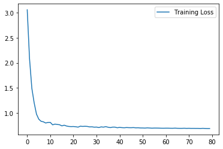
Look at the reconstruction of a normal ecg sequence of the testset
encoded_imgs = vae.encoder(normal_test_data)
decoded_imgs = vae.decoder(encoded_imgs).numpy()
plt.plot(normal_test_data[0],'b')
plt.plot(decoded_imgs[0],'r')
plt.fill_between(np.arange(140), decoded_imgs[0], normal_test_data[0], color='lightcoral' )
plt.legend(labels=["Input", "Reconstruction", "Error"])
plt.show()
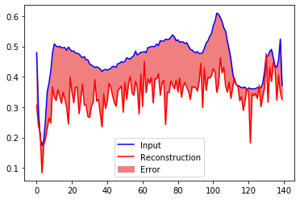
As before, we compute the threshold from the mean absolute error plus one standard deviation
reconstructions = vae.predict(normal_train_data)
train_loss = tf.keras.losses.mae(reconstructions, normal_train_data)
plt.hist(train_loss, bins=50)
plt.xlabel("Train loss")
plt.ylabel("No of examples")
plt.show()
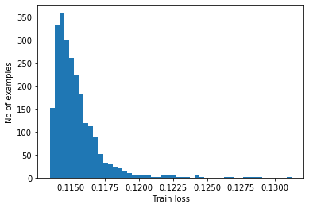
threshold_vae = np.mean(train_loss) + np.std(train_loss)
print("Threshold: ", threshold_vae)
Threshold: 0.11696462
reconstructions = vae.predict(anomalous_test_data)
test_loss = tf.keras.losses.mae(reconstructions, anomalous_test_data)
plt.hist(test_loss, bins=50)
plt.axvline(threshold_vae,c='r')
plt.xlabel("Test loss")
plt.ylabel("No of examples")
plt.show()
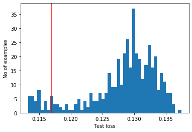
Classify an ECG as an anomaly if the reconstruction error is greater than the threshold.
preds = predict(vae, test_data, threshold_vae)
print("Variational Autoencoder")
print_stats(preds, test_labels)
Variational Autoencoder
Accuracy = 0.91
Precision = 0.9351851851851852
Recall = 0.9017857142857143
preds = predict(autoencoder, test_data, threshold_ae)
print("Autoencoder")
print_stats(preds, test_labels)
Autoencoder
Accuracy = 0.942
Precision = 0.9921568627450981
Recall = 0.9035714285714286
print("RNN as classifier")
print('Accuracy = ',accuracy_test_rnn)
print('Precision = ',precision_test_rnn)
print('Recall = ',recall_test_rnn)
RNN as classifier
Accuracy = 0.979
Precision = 0.9696428571428571
Recall = 0.9926873857404022